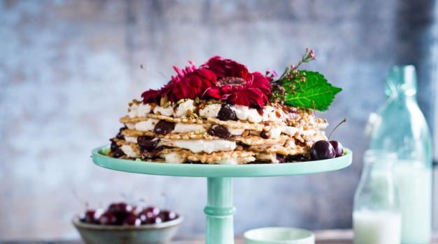

Do you know how to level a cake?
After years of cake successes and flops, I’m confident in this homemade vanilla cake. During my
recipe testing, I combined my white cake recipe and naked cake recipe. These are two reader
favorites and I knew they’d be the best starting point.

Vanilla Cake Success Tips
I always eyeball the amount of frosting between cake layers, but I measured when I decorated the
pictured cake. The vanilla buttercream recipe below yields about 6 cups of frosting. I recommend
you use about 1.5 heaping cups of buttercream between each cake layer and reserve the last 3
cups for outside the cake.